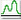
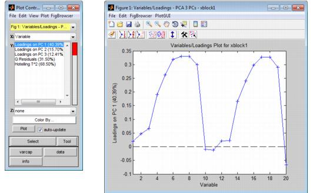
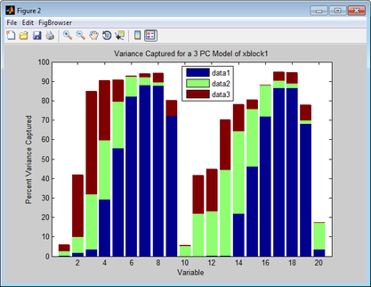
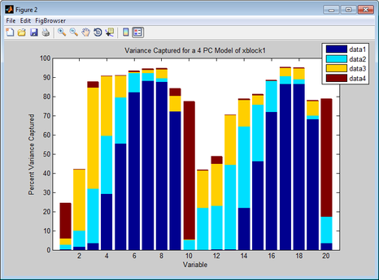
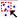
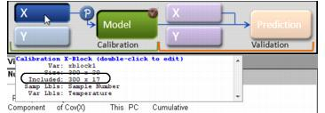

Table of Contents | Previous | Next
Plotting Loads and Variable Statistics for a Calibration Model
For most analysis methods, the Analysis window toolbar contains a Plot loads and variable statistics button . Loading is defined as the contribution of each variable to a principal component or factor. A Loads plot (also known as a Loadings plot) shows, at a minimum, as many different loadings as the number of principal components or factors that were retained in the model. Loads plots help you assess the extent to which the variables contribute to each of the individual principal components or factors. The figure below shows a Loads plots for a PCA analysis in which 20 variables were measured and three principal components were retained. In the Plot Controls window, three loadings-Loading on PC1, Loading on PC2, and Loading on PC3-are available for plotting.
- Loads plots for a PCA analysis in which 20 variables were measured and three principal components were retained
- 
Note: For information about the Plot Controls window and Plot window, see Plot Controls Window.
Options are available for changing the plot display and for examining and refining the model by excluding certain samples and/or variables to enhance the model performance. See:
Changing the plot display
Note: The examples listed here are not meant to be an exhaustive list of all of the available Plot Controls options for changing a Loads plot display. Instead, it is simply to provide representative examples of some of the more commonly used options when building a model.
- Turn on the Data Cursor and then click on a data point in a Loads plot to open an Information dialog box that provides the variable number and the contribution of the variable to the principal component or factor.
|
- On the Plot Controls window, click varcap to generate a Variance Captured plot. This plot details the percent variance captured for each variable by each principal component or factor. For example, the Variance Captured plot shown below shows that the model captures well over 90% of the variance for variables 5 through 8. Likewise, the model captures well over 90% of the variance for variables 17 and 18. The plot also shows that the model captures approximately 40% of the variance in variable 2, with principal component 3 containing the majority of this variance. Likewise, the plot shows that the model captures well over 90% of the variance for variables 6 through 8, with principal component 1 containing the majority of this variance. Finally, the plot also shows that the model captures less than 20% of the variance in variable 20, with principal component 2 containing the majority of the variance and principal component 3 explaining none of the variance in variable 20.
|
- Example of a Variance Captured plot
- 
- Choose a different number of components or factors and recalculate the model. The existing varcap plot is automatically updated. The figure below shows the varcap plot for the PCA model with four principal components now retained. This plot shows that as you increase the number of retained principal components or factors, the model captures more variance. For example, the previous three component model captured less than 20% of the variance in variable 2. A four component model now captures well over 80% of the variance in variable 2, with principal component 4 containing the majority of this variance.
|
- Example of a Variance Captured plot
- 
Refining the model by removing variables
Typically, when using Loads plots to refine a model, you select variables that you consider to be unusual for the plotted data and then carry out a series of steps to determine whether to include the variables in the model, or to exclude the variables from the model.
Note: Typically, if you want to refine a model by removing samples, you use the information in a Scores plot. See Plotting Scores and Statistical Values for a Calibration Model.
Note: The examples listed here are not meant to be an exhaustive list of all of the available Plot Controls options for refining a model using a Loads plot. Instead, it is simply to provide representative examples of some of the more commonly used options when building a model.
| 1.
|
Initially, you can do the following to review your variables, and determine which variables, if any, require further investigation:
|
- On the Plot Controls window, click Data to generate a plot that shows the trend or response of all the variables for all samples.
|
| 2.
|
For variables that you have determined require further investigation, you can do the following:
|
- On the Plot Controls dialog box, click Tools, and then select your tool of choice. (You can also click the Choose Selection Tool icon and then select your tool of choice.)
|
- Note: "Lasso" is the most flexible tool for selecting samples.
- On the Plot Controls dialog box, click Make Selection, and then click and drag your cursor around the variables to select them. (You can also click the Make Selection icon  and then click and drag your cursor around the variables to select them.)
|
- The color of the selected variable(s) is not only in the currently active plot, but also, in any other open plots that contain the variable(s).
| 3.
|
With the selected variables now highlighted in the plot, you can now do one or more of the following to place the focus on the selected variables and glean further information about the selected variables before deciding to include them or exclude them for the model:
|
- On the Plot Controls window main menu, click View > Numbers to display the Variable numbers/IDs next to the selected variables.
|
- Plot the Q Residuals for the DataSet versus the T^2 values for the dataset and note where the selected variables fall in the plot. If in this plot you notice additional variable(s) that might not have a large impact on the model (for example, a variable that has a high Q residual value but a low T^2 value), you can select these variables as well. (These additional variables are referred to as the "new" variables in the next two options.)
|
- To add the new variables to the currently selected variables, hold down the Shift key, click Select on the Plot Controls window, and then click and drag your cursor around the new variables to select them.
|
- To select only the new variables (and deselect the previously selected samples), click Select on the Plot Controls window, and then click and drag your cursor around the new variables to select them. (Do not hold down the Shift key while selecting this new variables.)
|
| 4.
|
To exclude all of the selected variables from the model in a single step, on the Plot Controls window main menu, click Edit > Exclude Selection.
|
- The selected variables are removed from the Loads plots and the Loads plots, including the varcap plot, are updated to reflect this removal.
|
- The initial model that was calculated in the Analysis window is removed.
|
- Note: As shown in the figure below, after you exclude samples from a DataSet, point your mouse cursor on the X calibration control to open tooltip text opens that indicates the number of variables that are being included in the model.
- Tooltip text that indicates the number of variables that are being included in the model
- 
At this point, you should iteratively repeat the steps of recalculating the model and then examining the model (in particular, by using the varcap plot) and refining the model by including or excluding variables until you are satisfied with the model. You can then do one of the following:
- Save the model to the Workspace Browser or to a file and use it at a later date, or export the model to a file or a predictor.
|
- Note: See Exporting_Models